🔐 Network Analysis – Ransomware
Escenario
ABC Industries trabajó día y noche durante un mes para preparar un documento de licitación para un prestigioso proyecto que aseguraría el futuro financiero de la compañía. La compañía fue golpeada por ransomware, que se cree fue realizada por un competidor, y la versión final del documento de licitación fue cifrada. Ahora mismo necesitan un experto que pueda descifrar este documento crítico. Todo lo que tenemos es el tráfico de la red, la nota de rescate, y el documento de ender cifrado. Haz lo tuyo.
Preguntas
Cuál es el sistema operativo del huéspe desde el que fue capturado el tráfico de la red? (Mira Capture File Properties, copiar los detalles exactamente)
Al revisar las propiedades del archivo .pcap (Capture File Properties), se observa que el sistema operativo del host desde el que se realizó la captura es 32-bit Windows 7 Service Pack 1, build 7601. En las mismas propiedades también se indica que la captura fue realizada con Dumpcap (Wireshark) 3.4.3
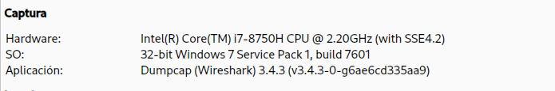
Cuál es la URL completa de la que se descargó el ejecutable de ransomware?
Se aplicó el filtro http.request.method == "GET" para visualizar únicamente las solicitudes HTTP GET. Entre los resultados se identificó una única petición correspondiente a la descarga de un archivo ejecutable. Al inspeccionar los detalles del paquete se observó el campo Full request URI, el cual indica que el ejecutable de ransomware fue descargado desde la siguiente URL: http://10.0.2.15:8000/safecrypt.exe.
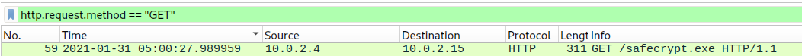
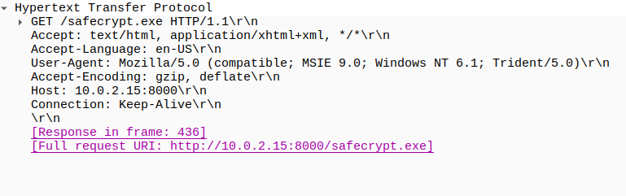
Nombre el archivo ejecutable de ransomware?
Al analizar el flujo TCP mediante la opción TCP Stream, se observa que el archivo descargado es safecrypt.exe. Además, el contenido del flujo comienza con la firma MZ, característica de los archivos Portable Executable (PE) de Windows, lo que confirma que se trata de un archivo ejecutable.
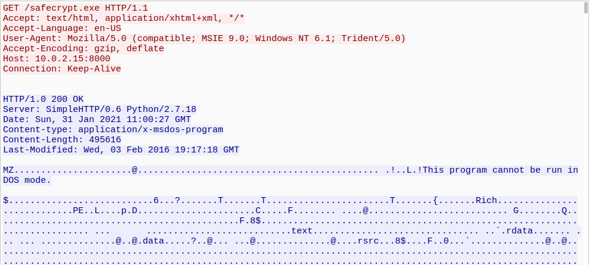
Qué es el hash MD5 del ransomware?
Para obtener el hash MD5 del ransomware, primero se exportó el archivo ejecutable desde File → Export Objects → HTTP, donde se identificó el archivo safecrypt.exe y se guardó en el sistema.
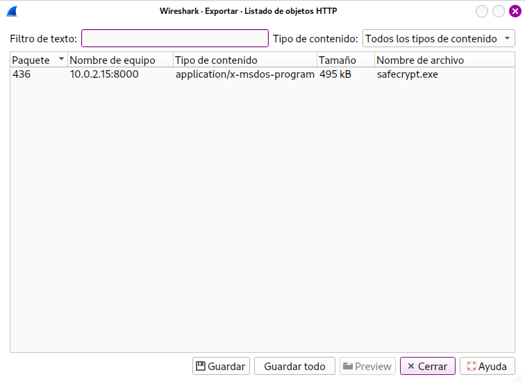
Posteriormente, desde la terminal se ejecutó el comando md5sum safecrypt.exe, el cual permitió calcular el hash MD5 del archivo.
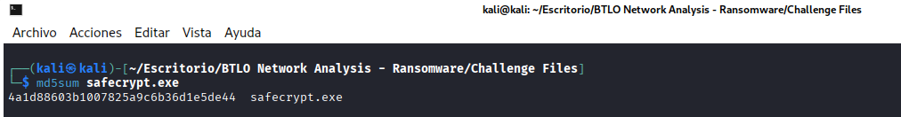
Cómo se llama el ransomware?
Una vez obtenido el hash MD5 del archivo safecrypt.exe, se realizó una búsqueda en VirusTotal para identificar el malware. En la sección Threat label se observa que el archivo es identificado como TeslaCrypt, confirmando que el ejecutable pertenece a esta familia de ransomware.
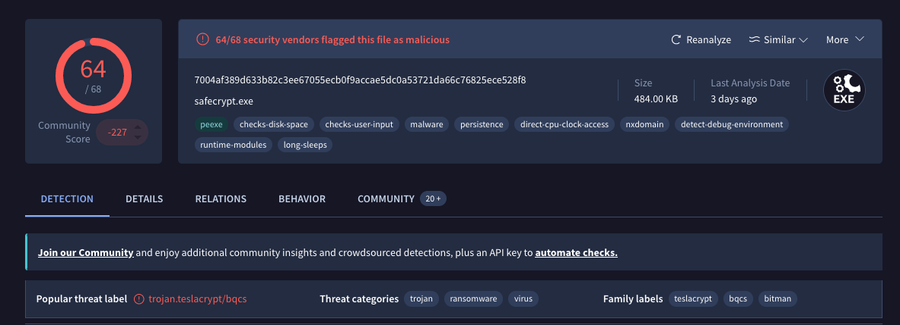
Cuál es el algoritmo de cifrado utilizado por el ransomware, según la nota de rescate?
Al revisar la nota de rescate, se observa que el atacante indica que los archivos fueron cifrados mediante RSA-4096.
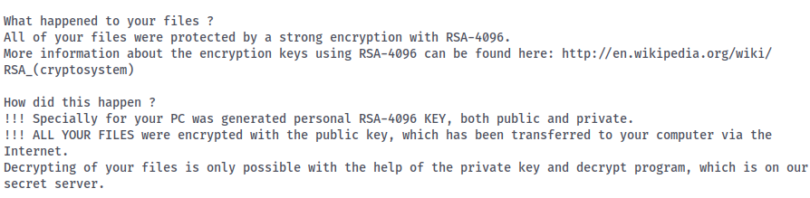
Cuál es el dominio que empieza con el tráfico de ransomware?
Al filtrar el tráfico DNS correspondiente al host comprometido, se identificó una consulta para el dominio dunyamuzelerimuzesi.com. Esta consulta forma parte de la actividad de red observada durante la ejecución del ransomware y corresponde al dominio con el que inicia el tráfico asociado a la infección.
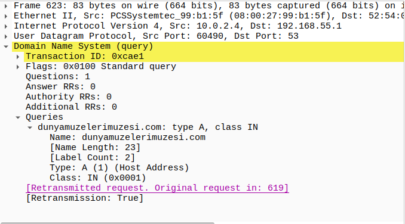
Descifrar el documento de licitación y presentar la bandera
Una vez identificada la muestra como TeslaCrypt, se utilizó la herramienta ESET TeslaCrypt Decryptor en Windows para descifrar el archivo Tender.pdf.micro.
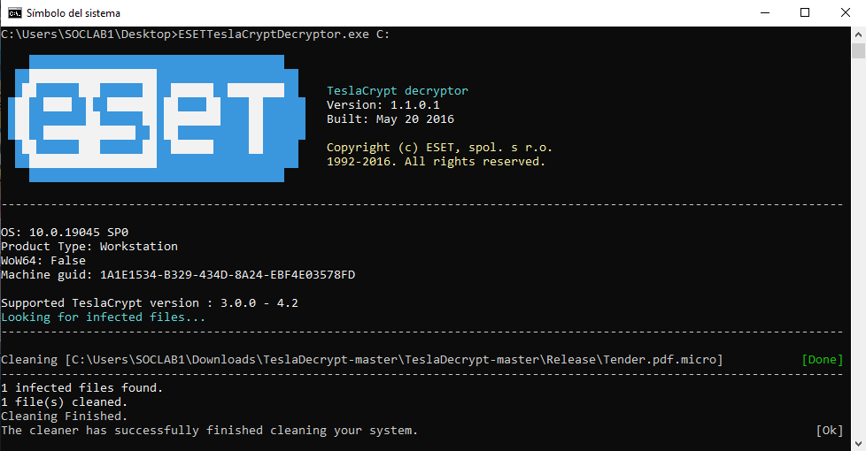
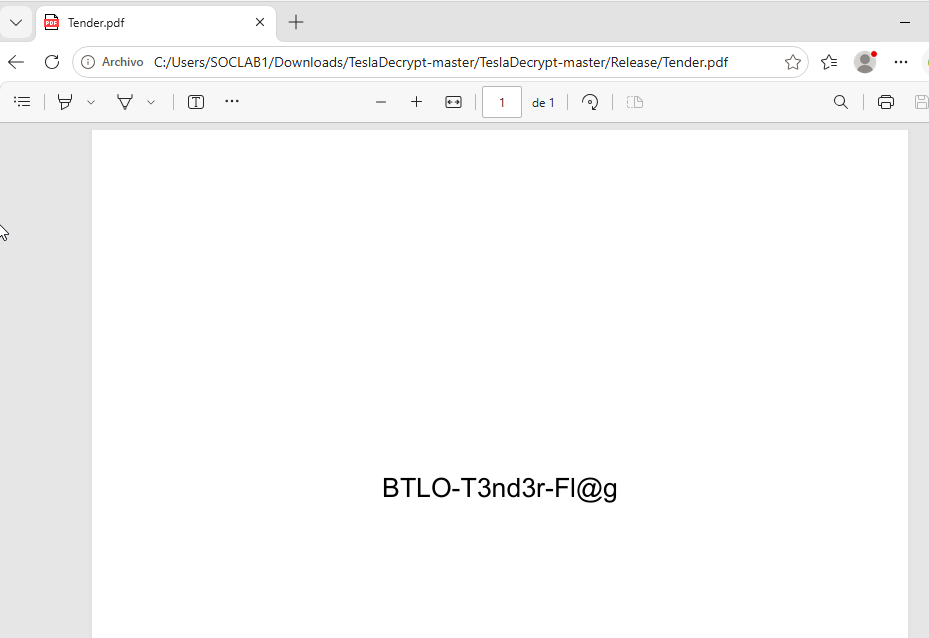
Conclusión
Este tipo de ataques representa una de las amenazas más críticas para las organizaciones, ya que el ransomware cifra los archivos de los sistemas comprometidos y puede afectar gravemente la disponibilidad e integridad de la información. Por ello, una respuesta rápida y una adecuada gestión del incidente son fundamentales para reducir el impacto y evitar ceder al chantaje de los atacantes. Asimismo, es indispensable mantener los sistemas actualizados, aplicar buenas prácticas de seguridad y fortalecer la concienciación de los usuarios para disminuir el riesgo de sufrir este tipo de ataques.